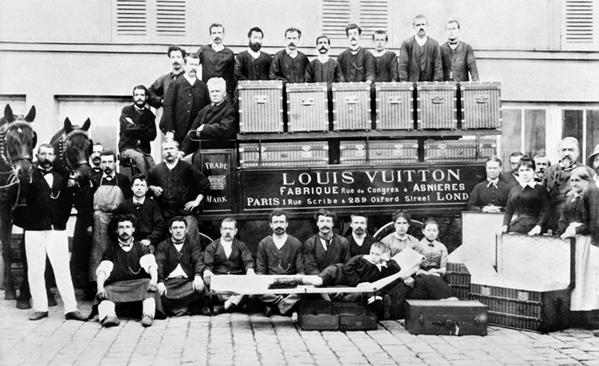
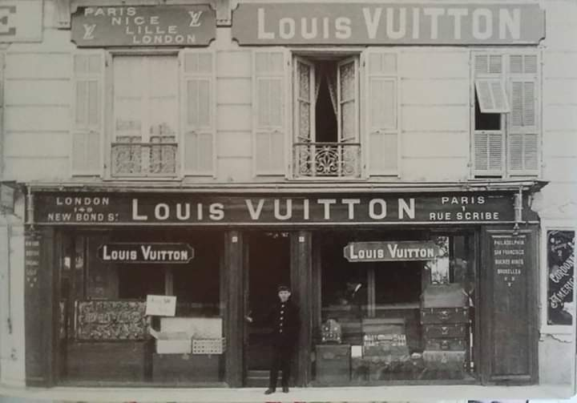
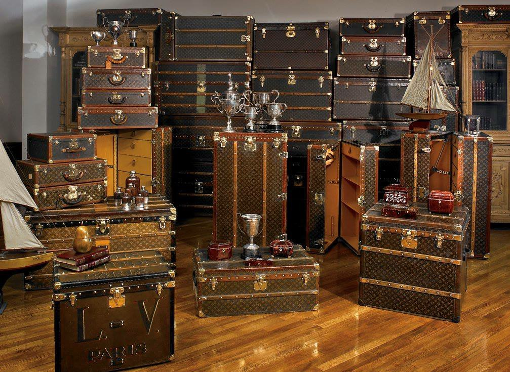
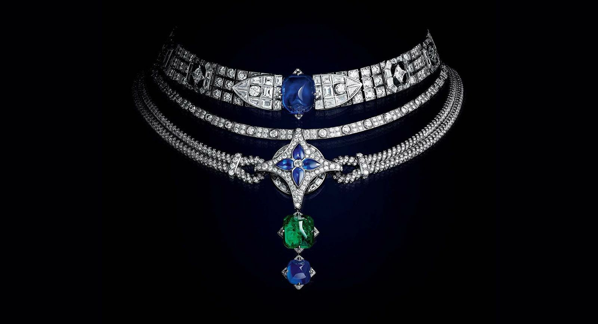
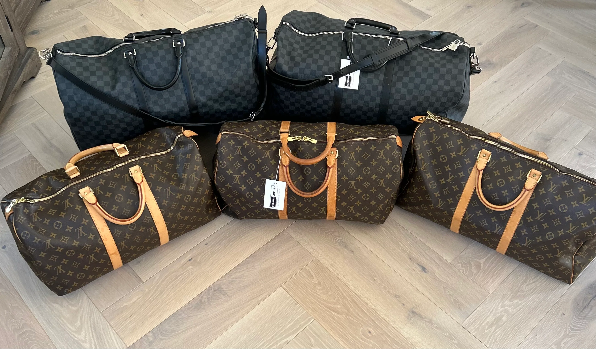
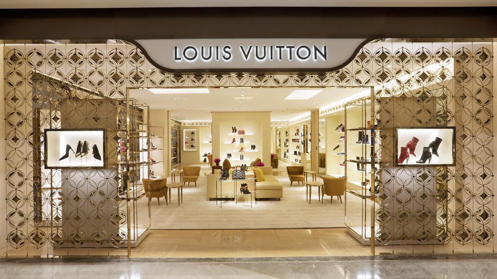
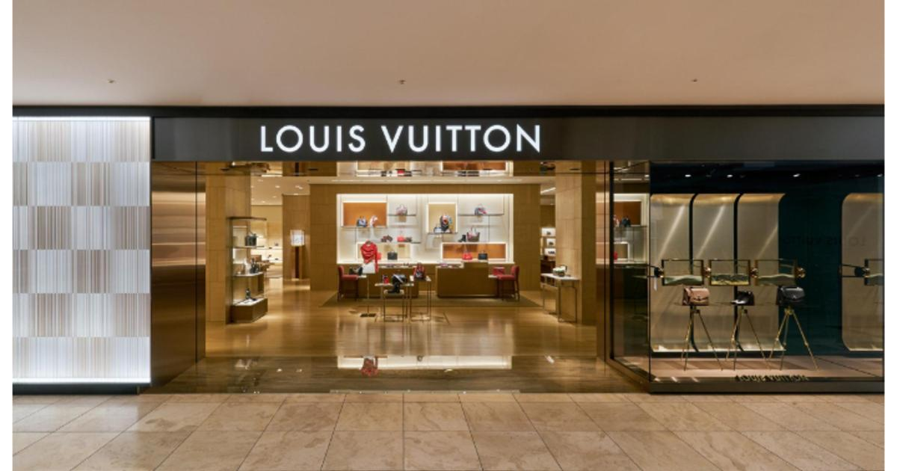
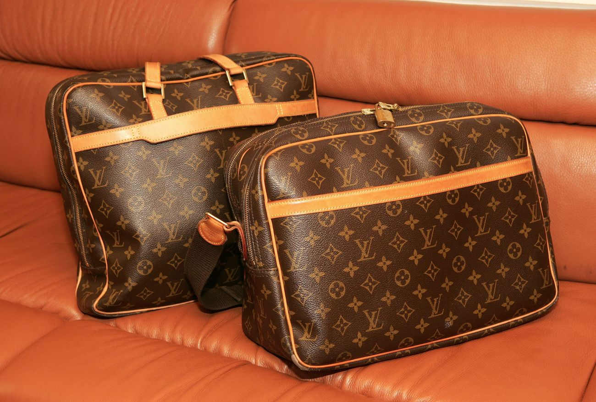

<!DOCTYPE html>
<html lang="hi">
<head>
    <meta charset="UTF-8">
    <meta name="viewport" content="width=device-width, initial-scale=1.0">

    <!-- Title -->
    <title>लुई वुइटन का जीवन – फैशन और लग्ज़री ब्रांड का इतिहास</title>

    <!-- Meta Description -->
    <meta name="description" content="लुई वुइटन का जीवन, संघर्ष, और फैशन उद्योग में उनका योगदान। जानें कैसे एक छोटे कारीगर से लुई वुइटन दुनिया का सबसे बड़ा लग्ज़री ब्रांड बना।">

    <!-- Meta Keywords -->
    <meta name="keywords" content="Louis Vuitton, लुई वुइटन, Louis Vuitton biography, Louis Vuitton life story, luxury brand, फैशन ब्रांड, Louis Vuitton history">

    <!-- Author -->
    <meta name="author" content="SKZ Blog">

    <!-- Canonical -->
    <link rel="canonical" href="https://skzblog.in/LV-life/" />

    <!-- Open Graph Tags (Social Sharing) -->
    <meta property="og:title" content="लुई वुइटन का जीवन – फैशन और लग्ज़री ब्रांड का इतिहास">
    <meta property="og:description" content="लुई वुइटन का जीवन, संघर्ष, और फैशन उद्योग में उनका योगदान। जानें कैसे Louis Vuitton दुनिया का सबसे बड़ा लग्ज़री ब्रांड बना।">
    <meta property="og:type" content="article">
    <meta property="og:url" content="https://skzblog.in/LV-life/">
    <meta property="og:image" content="https://skzblog.in/images/louis-vuitton.jpg">

    <!-- Google Fonts -->
    <link href="https://fonts.googleapis.com/css2?family=Roboto:wght@400;700&display=swap" rel="stylesheet">
</head>
<body>
    <!-- Body content here -->
</body>
</html>

    <style>
        body {
            font-family: 'Roboto', sans-serif;
            line-height: 1.6;
            margin: 0;
            padding: 0;
            background-color: #f4f4f4;
        }
        header {
            background: #4A148C;
            color: #fff;
            padding: 20px;
            text-align: center;
            box-shadow: 0 2px 5px rgba(0, 0, 0, 0.2);
        }
        nav {
            margin: 15px 0;
        }
        nav a {
            color: #fff;
            margin: 0 15px;
            text-decoration: none;
            font-weight: bold;
            transition: color 0.3s;
        }
        nav a:hover {
            color: #ffcc00;
        }
        section {
            padding: 20px;
            max-width: 800px;
            margin: 20px auto;
            background: #fff;
            border-radius: 8px;
            box-shadow: 0 2px 10px rgba(0, 0, 0, 0.1);
        }
        h2 {
            color: #4A148C;
        }
        ul, ol {
            margin-left: 20px;
        }
        footer {
            text-align: center;
            padding: 15px 0;
            background: #4A148C;
            color: #fff;
            position: relative;
            bottom: 0;
            width: 100%;
        }
        @media (max-width: 600px) {
            nav a {
                display: block;
                margin: 10px 0;
            }
        }
    </style>
    <script async src="https://pagead2.googlesyndication.com/pagead/js/adsbygoogle.js?client=ca-pub-2483895828585684" crossorigin="anonymous"></script>
    <script>
        (adsbygoogle = window.adsbygoogle || []).push({
            google_ad_client: "ca-pub-2483895828585684",
            enable_page_level_ads: true
        });
    </script>
</head>
<body>

<header>
    <h1>लुई वुइटन का जीवन</h1>
    <nav>
        <a href="#about">About</a>
        <a href="#privacy">Privacy Policy</a>
    </nav>
</header>

<section>
    <h2>प्रारंभिक जीवन और पेरिस की यात्रा</h2>
    <p>लुई वुइटन का जन्म 4 अगस्त, 1821 को फ्रांस के एंचेय गाँव में हुआ था। उनके पिता एक गरीब किसान थे, जबकि उनकी माँ टोपी बनाकर परिवार का भरण-पोषण करती थीं। इस कठिनाई के कारण लुई को अपनी पढ़ाई छोड़कर खेतों में अपने पिता की मदद करनी पड़ी।</p>
    <p>1831 में, जब लुई लगभग 10 वर्ष के थे, उनकी माँ का निधन हो गया। इसके बाद, उनकी सौतेली माँ ने उनके साथ दुर्व्यवहार किया, जिसे उनके पिता ने भी नहीं रोका।</p>
    <p>तीन साल तक दुर्व्यवहार सहने के बाद, 1835 में, 13 साल की उम्र में, लुई बिना किसी को बताए रात में घर से भाग गए और पेरिस के लिए निकल पड़े, जो एंचेय से 292 मील दूर था।</p>
    <p>उन्होंने पेरिस तक की पूरी यात्रा पैदल तय की। रास्ते में भोजन के बदले छोटे-मोटे काम किए और कभी-कभी जंगलों में सोए या भूखे रहे। यह कठिन यात्रा दो साल तक चली।</p>
    <p>1837 में पेरिस पहुँचने के बाद, लुई का मुख्य लक्ष्य भोजन प्राप्त करना था। उस समय पेरिस में रेलवे सेवा शुरू होने के कारण सामान के बक्सों की मांग बढ़ गई थी।</p>

    <h2>अप्रेंटिसशिप और व्यवसाय की स्थापना</h2>
  <p>लुई को Monsieur Maréchal नामक एक शिल्पकार ने काम पर रखा, जो बक्से बनाने में माहिर थे। लुई ने 16 साल तक उनके अधीन काम करते हुए अपने कौशल को निखारा।</p>
  <div style="text-align:center; margin: 20px 0;"></div>
    <p>उनकी शिल्प कौशल इतनी प्रसिद्ध हो गई कि ग्राहक विशेष रूप से उनके द्वारा बनाए गए ट्रंक की मांग करने लगे। 1852 में, महारानी यूजिनी, सम्राट नेपोलियन III की पत्नी, ने उनके काम की इतनी प्रशंसा की कि उन्होंने उन्हें अपना व्यक्तिगत बॉक्स निर्माता नियुक्त किया, जिससे लुई की स्थिति में काफी वृद्धि हुई।</p>
  <p>22 अप्रैल, 1854 को लुई ने शादी की और जल्द ही Rue Neuve-des-Capucines में अपनी दुकान खोली। उन्होंने उसी इमारत में एक मेज़ानाइन फ्लैट में एक घर भी खरीदा।</p>
  <div style="text-align:center; margin: 20px 0;"></div>
    <p>गुणवत्ता बनाए रखने के लिए, 1858 में लुई Rue du Rocher, 76 में चले गए और व्यक्तिगत रूप से ट्रंक उत्पादन की देखरेख करने लगे।</p>

    <h2>सामान डिजाइन में नवाचार</h2>
    <p>लुई ने पेरिस में उपयोग किए जाने वाले यात्रा बक्सों में एक महत्वपूर्ण समस्या की पहचान की: पारंपरिक गुंबद के आकार के ढक्कन वाले बक्से भारी और बोझिल थे, और ट्रेन यात्रा के लिए अव्यावहारिक थे क्योंकि वे बहुत अधिक जगह घेरते थे।</p>
    <p>उन्होंने एक समाधान पेश किया: फ्लैट-टॉप आयताकार ट्रंक, जिसे स्टीमर ट्रंक के नाम से भी जाना जाता है। इसे ट्रियनॉन कैनवास नामक एक टिकाऊ, हल्के कपड़े से बनाया गया था।</p>
    <p>आयताकार आकार ने ट्रंक को ढेर करने की अनुमति दी, जिससे जगह का अनुकूलन हुआ और सुविधा में सुधार हुआ। यह अभिजात वर्ग के बीच बहुत लोकप्रिय हो गया।</p>
  <p>लुई वुइटन ने धनी ग्राहकों की जरूरतों को पूरा करने के लिए अनुकूलित ट्रंक की पेशकश शुरू की, जिसमें डिब्बे और खंड शामिल थे, जिससे वे अधिक व्यावहारिक और आधुनिक बन गए।</p>
  <div style="text-align:center; margin: 20px 0;"></div>
    <p>उन्होंने महिलाओं के लिए हल्के और स्टाइलिश हैंडबैग भी डिजाइन किए, जिससे उनकी मांग काफी बढ़ गई।</p>
    <p>1867 में पेरिस यूनिवर्सल प्रदर्शनी में लुई वुइटन को कांस्य पदक से सम्मानित किया गया, और 1869 में स्वेज नहर के खुलने से उनके यात्रा बैग और ट्रंक को काफी ध्यान मिला।</p>

    <h2>अंतर्राष्ट्रीय पहचान और शाही ग्राहक</h2>
    <p>फ्रांस के अभिजात वर्ग ने LV के स्टाइलिश ट्रंक और बैग पेरिस लाए, जिससे ब्रांड को अंतरराष्ट्रीय स्तर पर पहचान मिली।</p>
  <p>मिस्र के वायसराय ने LV को शाही परिवार के आपूर्तिकर्ता के रूप में मान्यता दी, जिससे ब्रांड की अंतरराष्ट्रीय प्रतिष्ठा में वृद्धि हुई।</p>
  <div style="text-align:center; margin: 20px 0;"></div>
    <p>भारत के राजाओं ने LV बैग के लिए और भी अधिक प्रशंसा दिखाई। कपूरथला के राजा जगतजीत सिंह ने कपड़ों, तलवारों और पगड़ी के भंडारण सहित विभिन्न उद्देश्यों के लिए 60 अनुकूलित ट्रंक का आदेश दिया।</p>
    <p>बड़ौदा के राजा सयाजीराव गायकवाड़ एक नियमित ग्राहक बन गए, और जम्मू और कश्मीर के राजा हरि सिंह ने पोलो पोशाक, सिगरेट सुखाने और अन्य जरूरतों के लिए सात महीनों के भीतर 38 अनुकूलित ट्रंक का आदेश दिया।</p>
  <p>शक्तिशाली और धनी व्यक्तियों द्वारा अपनाए जाने के कारण ब्रांड की लोकप्रियता बढ़ी, और अभिजात वर्ग द्वारा पसंद किए जाने वाले उत्पाद स्वाभाविक रूप से मध्यम और निम्न वर्गों के लिए आकांक्षात्मक बन गए।</p>
  <div style="text-align:center; margin: 20px 0;"></div>

    <h2>चुनौतियाँ और पुनर्निर्माण</h2>
    <p>1870 में फ्रेंको-प्रशिया युद्ध शुरू हुआ, जिससे लुई को पेरिस में अपनी दुकान और सामान छोड़ना पड़ा। उनके कार्यशालाएँ नष्ट हो गईं, उपकरण और इन्वेंट्री चोरी हो गई।</p>
  <p>युद्ध के अंत तक (1871), लुई ने सब कुछ खो दिया था, लेकिन संपत्ति की कीमतें गिरने और प्रमुख स्थानों के कम लागत पर उपलब्ध होने के कारण उन्हें एक अवसर मिला।</p>
  <div style="text-align:center; margin: 20px 0;"></div>
    <p>उन्होंने पेरिस के ओपेरा जिले में, रेलवे स्टेशन, ग्रैंड होटल और होटल स्क्राइब के पास एक दुकान खरीदी, जिससे उनका व्यवसाय तेजी से पुनर्जीवित हुआ।</p>
    <p>लुई के बेटे, जॉर्ज वुइटन ने 1885 में लंदन में पहली LV दुकान खोलकर ब्रांड की अंतरराष्ट्रीय उपस्थिति का विस्तार करने के लिए अपने पिता को राजी किया।</p>

    <h2>जालसाजी का मुकाबला और ताले में नवाचार</h2>
    <p>LV उत्पादों की जालसाजी एक बड़ी चुनौती बन गई, जिससे व्यवसाय को काफी नुकसान हुआ।</p>
    <p>जॉर्ज वुइटन ने टम्बलर लॉक का आविष्कार किया, जिसमें एक मल्टी-पिन टम्बलर सिस्टम था, जिससे चोरों के लिए इसे खोलना बहुत मुश्किल हो गया।</p>
  <p>जॉर्ज ने इस नए ताले को बढ़ावा देने के लिए एक चतुर विपणन रणनीति का उपयोग किया, जिसमें उन्होंने विश्व प्रसिद्ध पलायनवादी हैरी हुडिनी को LV ताला तोड़ने की चुनौती दी, जिसे हुडिनी ने अस्वीकार कर दिया।</p>
  <div style="text-align:center; margin: 20px 0;"></div>
    <p>इस नवाचार के साथ, LV लॉक सिस्टम एक प्रमुख बाजार की आवश्यकता का समाधान बन गया, और उनके उत्पादों की मांग बढ़ गई, क्योंकि धनी खरीदार मानते थे कि ताले से छेड़छाड़ नहीं की जा सकती।</p>
    <p>जालसाज ताले की नकल करने में असमर्थ थे, जिससे धनी खरीदारों के लिए बाजार में वास्तविक LV उत्पादों की पहचान करना आसान हो गया।</p>

    <h2>आगे के नवाचार और लुई का निधन</h2>
    <p>1889 में, लुई वुइटन को इस नवाचार के लिए पेरिस विश्व मेले में स्वर्ण पदक मिला।</p>
    <p>LV ने बैग की कार्यक्षमता के साथ-साथ उसकी आकांक्षात्मक मूल्य को बढ़ाने पर ध्यान केंद्रित किया, और फ्रेंच और अंग्रेजी दोनों में LV उत्पादों की पहली कैटलॉग बनाई।</p>
    <p>1892 में, जिस वर्ष कैटलॉग लॉन्च किया गया था, लुई वुइटन का मस्तिष्क कैंसर से निधन हो गया, और उनके बेटे, जॉर्ज वुइटन ने LV ब्रांड की जिम्मेदारियाँ संभालीं।</p>

    <h2>जॉर्ज वुइटन का नेतृत्व और मोनोग्राम डिजाइन</h2>
    <p>1893 में, जॉर्ज ने LV को अमेरिकी बाजार में पेश करने के लिए शिकागो, यूएसए में विश्व मेले में ले गए, जहाँ उन्होंने जेपी मॉर्गन और उनके परिवार को ग्राहक बनाया, और जॉन वानमेकर के स्टोर में LV बैग बेचना शुरू किया।</p>
    <p>1896 में, उन्होंने एक मोनोग्राम्ड कैनवास डिज़ाइन पेश किया, जिसमें चार व्यवस्थित पत्तियाँ, फूल और "LV" अक्षर शामिल थे, जो एक विशिष्ट पैटर्न बनाते थे।</p>
    <p>यह डिज़ाइन जापानी फूलों के रूपांकनों से प्रभावित था और ब्रांड को याद रखने योग्य मूल्य प्रदान करता था, साथ ही किसी भी नकली LV उत्पाद की आसानी से पहचान करने में मदद करता था।</p>
    <p>जॉर्ज ने प्रत्येक बैग को हाथ से बनाने पर जोर दिया, जिससे प्रामाणिक और नकली LV बैग के बीच का अंतर स्पष्ट हो गया, और जालसाजों के लिए इसकी नकल करना मुश्किल हो गया।</p>
    <p>जॉर्ज का डिज़ाइन 21 मार्च, 1905 को नेशनल ऑफिस ऑफ इंडस्ट्रियल प्रॉपर्टी द्वारा ट्रेडमार्क किया गया था।</p>

    <h2>गैस्टन लुई वुइटन और द्वितीय विश्व युद्ध का विवाद</h2>
    <p>जॉर्ज के 1936 में निधन के बाद, उनके बेटे, गैस्टन लुई वुइटन ने व्यवसाय संभाला, लेकिन उनका कार्यकाल द्वितीय विश्व युद्ध की शुरुआत के साथ मेल खाता था, जिससे LV की बिक्री में भारी गिरावट आई।</p>
    <p>LV ने नाज़ी कठपुतली सरकार के साथ सहयोग किया, उनके लिए प्रचार पोस्टर और मूर्तियाँ बनाईं, और विशेष आदेश स्वीकार किए, जबकि अधिकांश व्यवसाय प्रतिरोध दिखाने के लिए बंद थे।</p>
    <p>युद्ध के बाद, होलोकॉस्ट की भयावहता सामने आने पर LV की प्रतिष्ठा को काफी नुकसान हुआ, और कंपनी के इतिहास पर यह एक दाग बन गया।</p>
  <p>LV ने इस निर्णय का बचाव यह दावा करते हुए किया कि यह एक अस्तित्व की रणनीति थी, यह सुझाव देते हुए कि इसके बिना, ब्रांड शायद जीवित नहीं रह पाता।</p>
  <div style="text-align:center; margin: 20px 0;"></div>
    <p>युद्ध समाप्त होने के बाद, LV ने तेजी से विकास किया और धनी ग्राहकों की विशिष्ट जरूरतों के लिए अधिक उत्पाद लॉन्च किए, जैसे कटलरी के लिए बक्से, मिनी-बार बक्से और अन्य अनुकूलित वस्तुएँ।</p>

    <h2>हेनरी रैकैमारे का नेतृत्व और व्यवसाय परिवर्तन</h2>
    <p>1970 में गैस्टन लुई वुइटन का निधन हो गया, और उनके बच्चों में व्यवसाय का प्रबंधन करने का अनुभव नहीं था, जिससे बिक्री में गिरावट आने लगी।</p>
    <p>गैस्टन के बच्चों में से एक, ऑडिल वुइटन ने हेनरी रैकैमारे से शादी की, जो एक सफल व्यवसायी थे, और हेनरी को LV का प्रबंधन करने का काम सौंपा गया, जो पहली बार था जब वुइटन परिवार के बाहर किसी ने ब्रांड का नियंत्रण संभाला।</p>
    <p>हेनरी ने LV को एक पारिवारिक व्यवसाय से एक विशाल निगम में बदल दिया, थोक विक्रेताओं को समाप्त कर दिया और उत्पादों को सीधे LV की खुदरा दुकानों के माध्यम से बेचना शुरू कर दिया। इस कदम से LV का लाभ छह साल में 250 मिलियन यूरो से अधिक हो गया, और प्रत्यक्ष बिक्री का यह मॉडल आज भी LV को लाभ पहुँचा रहा है।</p>
    <p>1984 में, हेनरी ने LV को पेरिस और न्यूयॉर्क स्टॉक एक्सचेंजों में सूचीबद्ध किया, जिससे दुनिया भर में 130 से अधिक LV खुदरा दुकानें खोलने के लिए धन जुटाया गया।</p>
    <p>इस रणनीति से LV उत्पादों की मांग में भारी वृद्धि हुई, खासकर यूएसए और जापान में, और 1987 तक LV की बिक्री $1 बिलियन तक पहुँच गई।</p>
  <h2>आधुनिक युग में लुई वुइटन</h2>
  <p>1990 के दशक के बाद, लुई वुइटन ने फैशन, लक्ज़री और नवाचार के क्षेत्र में अपनी स्थिति को और मजबूत किया। 1987 में LV ने मोएट हेनेसी और शैम्पेन निर्माता मोएट & शैन्डन के साथ विलय कर LVMH समूह की स्थापना की, जो आज दुनिया का सबसे बड़ा लक्ज़री समूह है।</p>
  <p>1997 में, मार्क जैकब्स को लुई वुइटन का पहला क्रिएटिव डायरेक्टर नियुक्त किया गया। उनके नेतृत्व में ब्रांड ने पहली बार रेडी-टू-वियर कपड़ों की लाइन लॉन्च की और कई प्रसिद्ध कलाकारों के साथ सहयोग किया, जैसे ताकाशी मुराकामी और स्टीफन स्प्राउस।</p>
  <p>ब्रांड ने अपने क्लासिक उत्पादों के साथ-साथ सीमित संस्करण और सहयोगी संग्रह भी पेश किए, जिससे युवा पीढ़ी के बीच LV की लोकप्रियता और बढ़ गई।</p>
  <p>2013 में निकोलस गेस्किएरे ने क्रिएटिव डायरेक्टर का पद संभाला और ब्रांड को आधुनिक, बोल्ड और तकनीकी रूप से उन्नत डिज़ाइनों की ओर अग्रसर किया।</p>
  <p>लुई वुइटन ने डिजिटल युग में भी अपनी उपस्थिति को मजबूत किया है, ऑनलाइन स्टोर्स, सोशल मीडिया और वर्चुअल फैशन शो के माध्यम से ग्राहकों से जुड़ाव बढ़ाया है।</p>
  <p>आज LV न केवल बैग और ट्रंक, बल्कि कपड़े, जूते, घड़ियाँ, गहने, परफ्यूम और एक्सेसरीज़ में भी अग्रणी है। ब्रांड की वैश्विक उपस्थिति 60 से अधिक देशों में 460 से अधिक स्टोर्स के साथ है।</p>
  <p>लुई वुइटन की विरासत नवाचार, उत्कृष्टता और लक्ज़री के प्रतीक के रूप में आज भी जीवित है, और यह ब्रांड फैशन की दुनिया में प्रेरणा का स्रोत बना हुआ है।</p>
</section>

<!-- ====== Footer Start ====== -->
<footer class="bg-gradient-to-r from-gray-900 via-gray-800 to-gray-900 text-gray-300 py-8 relative overflow-hidden">
  <div class="container mx-auto px-4">

    <!-- Top Section Center -->
    <div class="text-center">
      <!-- Logo / Branding -->
      <h2 class="text-2xl sm:text-3xl font-bold text-green-400 mb-3">SKZBlog</h2>

      <!-- Live Date & Time in Hindi -->
      <p id="datetime" class="mb-6 text-sm sm:text-base text-gray-400"></p>
    </div>

    <!-- Social Icons as Buttons -->
    <div class="flex justify-center flex-wrap gap-4 mb-6">
      <a href="https://x.com/sumansauravkss" target="_blank" 
         class="flex items-center gap-2 bg-black text-white px-4 py-2 rounded-full shadow-md hover:shadow-lg hover:scale-105 transition-all duration-300">
        <i class="fab fa-x-twitter text-xl"></i> X (Twitter)
      </a>

      <a href="https://www.linkedin.com/in/suman-saurav-503524265/" target="_blank" 
         class="flex items-center gap-2 bg-blue-600 text-white px-4 py-2 rounded-full shadow-md hover:shadow-lg hover:scale-105 transition-all duration-300">
        <i class="fab fa-linkedin text-xl"></i> LinkedIn
      </a>

      <a href="https://www.facebook.com/Zack387" target="_blank" 
         class="flex items-center gap-2 bg-blue-700 text-white px-4 py-2 rounded-full shadow-md hover:shadow-lg hover:scale-105 transition-all duration-300">
        <i class="fab fa-facebook text-xl"></i> Facebook
      </a>

      <a href="https://www.instagram.com/suman__saurav_902" target="_blank" 
         class="flex items-center gap-2 bg-gradient-to-r from-pink-500 via-red-500 to-yellow-500 text-white px-4 py-2 rounded-full shadow-md hover:shadow-lg hover:scale-105 transition-all duration-300">
        <i class="fab fa-instagram text-xl"></i> Instagram
      </a>
    </div>

    <!-- Bottom Section with Copyright + Back to Top -->
    <div class="flex justify-between items-center mt-6 border-t border-gray-700 pt-4 text-sm sm:text-base text-gray-400">
      <p>
        © <span id="year"></span> Managed & Developed by 
        <span class="font-semibold text-green-400">Suman Saurav</span>
      </p>

      <!-- Back to Top Button (Inside Footer Right) -->
      <button id="backToTop" class="bg-green-500 text-white px-4 py-2 rounded-full shadow-md hover:bg-green-600 hover:scale-105 transition-all duration-300" title="Back to Top">
        <i class="fas fa-arrow-up"></i>
      </button>
    </div>
  </div>
</footer>

<!-- FontAwesome CDN -->
<link rel="stylesheet" href="https://cdnjs.cloudflare.com/ajax/libs/font-awesome/6.5.0/css/all.min.css">

<!-- Scripts -->
<script>
  // Auto Year
  document.getElementById("year").textContent = new Date().getFullYear();

  // Live Date & Time in Hindi
  function updateDateTime() {
    const now = new Date();
    const options = { 
      weekday: 'long', year: 'numeric', month: 'long', 
      day: 'numeric', hour: '2-digit', minute: '2-digit', second: '2-digit',
      hour12: true
    };
    document.getElementById("datetime").textContent = now.toLocaleString('hi-IN', options);
  }
  setInterval(updateDateTime, 1000);
  updateDateTime();

  // Back to Top Button Click Action
  document.getElementById("backToTop").addEventListener("click", () => {
    window.scrollTo({ top: 0, behavior: "smooth" });
  });
</script>


